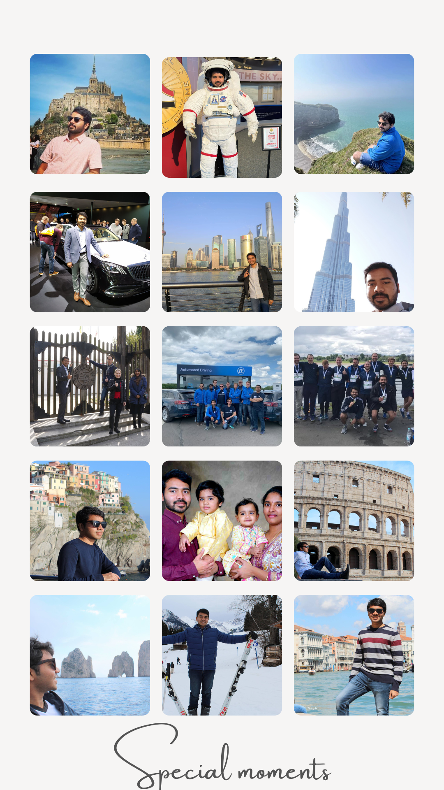

Passionate about Technology, Travel & AI — building things that matter, across three continents.

Born and raised in Tirupati, India, I grew up in a city of temples, grit, and ambition. My academic journey took me through Hyderabad for high school and Bengaluru for my Bachelor's degree — soaking in India's tech heartbeat.
A hunger for deeper expertise led me to Düsseldorf, Germany for my Master's, where I spent over 6 years building expertise in software engineering while navigating life in Europe. The discipline of German engineering and the warmth of multicultural Düsseldorf shaped who I am professionally.
Today I call the United States home, continuing to push boundaries in technology and AI. I'm married to Sowmya, and together we are proud parents of two — Paarth & Yashna, who remind me every day what truly matters.
Whether it's about technology, AI, career experiences, or just a good conversation — I'm always open.